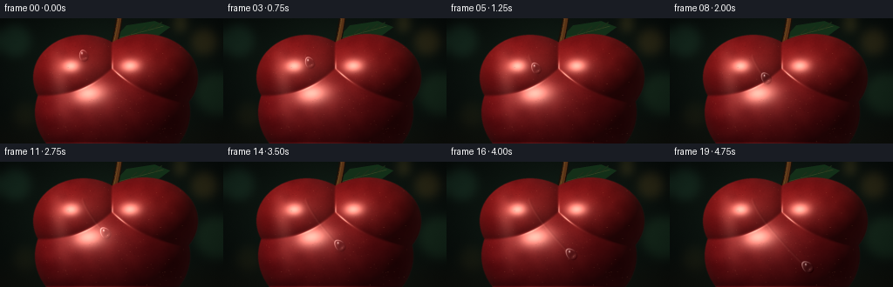
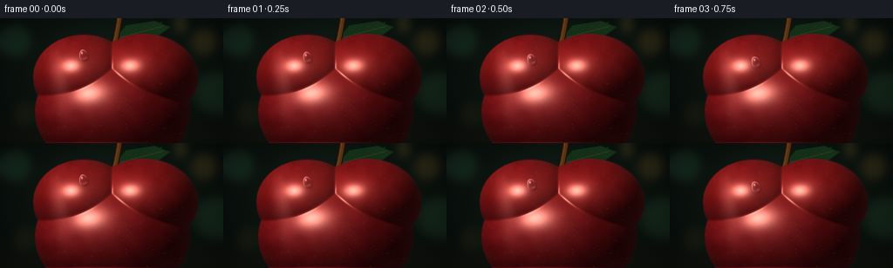

CODING AGENTS AS PIXEL WORLD MODELS
traex/GPT-5.6-Sol · phygen_038
点击播放 · 原生 RGB 像素
逐轮保存的候选
回放视频、检查图与代码变化。
每份候选均可单独播放。实际图片检查记录在下方工具轨迹中。
候选 01播放与检查图
点击播放 · 原生 RGB 像素

展开代码变化
--- 上一保存版本
+++ 本次保存版本
@@ -0,0 +1,270 @@
+from pathlib import Path
+import math
+import numpy as np
+import cv2
+from PIL import Image, ImageDraw
+import artifact_io
+
+# Deterministic procedural macro shot.
+W, H, N = 256, 144, 20
+S = 3
+WW, HH = W * S, H * S
+rng = np.random.default_rng(3817)
+
+# Work in final-image coordinates while rendering at 3x supersampling.
+yy, xx = np.mgrid[0:HH, 0:WW].astype(np.float32)
+x = (xx + 0.5) / S
+y = (yy + 0.5) / S
+
+# ----- Soft, dark orchard / studio background -----
+bg = np.zeros((HH, WW, 3), np.float32)
+bg[:] = (5.5, 10.0, 9.0)
+# A diffuse green-brown glow behind the fruit.
+glow = np.exp(-(((x - 124.0) / 116.0) ** 2 + ((y - 60.0) / 83.0) ** 2))
+bg += glow[..., None] * np.array([13.0, 20.0, 13.0], np.float32)
+# Shadowed tabletop / lower vignette.
+bg += np.clip((y - 105.0) / 39.0, 0, 1)[..., None] * np.array([8.0, 5.0, 2.0])
+
+# Defocused light circles, painted into a separate layer and strongly blurred.
+bokeh = np.zeros_like(bg)
+def soft_orb(cx, cy, radius, color, strength=1.0):
+ d = np.sqrt((x-cx)**2 + (y-cy)**2)
+ a = np.clip(1.0 - (d-radius*0.64)/(radius*0.36), 0, 1)
+ a = a*a*(3-2*a)
+ global bokeh
+ bokeh[:] += a[...,None] * np.array(color, np.float32) * strength
+
+soft_orb(17, 26, 22, (20, 43, 30), .58)
+soft_orb(234, 27, 18, (67, 48, 17), .50)
+soft_orb(248, 87, 29, (18, 38, 22), .58)
+soft_orb(29, 111, 17, (38, 29, 10), .32)
+soft_orb(207, 8, 9, (102, 80, 31), .40)
+bokeh = cv2.GaussianBlur(bokeh, (0,0), 5.2*S)
+bg += bokeh
+# Optical vignette and very fine sensor grain.
+vign = 1.0 - 0.34*np.clip(((x-W/2)/(W*.72))**2 + ((y-H/2)/(H*.79))**2, 0, 1)
+bg *= vign[...,None]
+bg += rng.normal(0, .75, bg.shape[:2])[...,None]
+
+# ----- Leaf and stem behind the apple -----
+back_img = Image.fromarray(np.uint8(np.clip(bg,0,255)), 'RGB')
+leaf = Image.new('RGBA', (WW,HH), (0,0,0,0))
+ld = ImageDraw.Draw(leaf)
+# A restrained, partly hidden leaf gives the macro shot natural context.
+leaf_pts = [(129*S,25*S),(145*S,8*S),(177*S,3*S),(195*S,10*S),
+ (177*S,23*S),(147*S,28*S)]
+ld.polygon(leaf_pts, fill=(20,49,25,240))
+ld.line([(134*S,23*S),(187*S,9*S)], fill=(67,86,41,185), width=1*S)
+for f in (.28,.47,.66,.82):
+ px = int((134 + (187-134)*f)*S); py = int((23 + (9-23)*f)*S)
+ ld.line([(px,py),(px+int(8*S),py-int(7*S))], fill=(48,72,34,130), width=1*S)
+leaf = leaf.filter(Image.Resampling.BICUBIC) if False else leaf
+back_img = Image.alpha_composite(back_img.convert('RGBA'), leaf)
+# Curved woody stem.
+stem = Image.new('RGBA',(WW,HH),(0,0,0,0)); sd=ImageDraw.Draw(stem)
+ts=np.linspace(0,1,30)
+stem_pts=[]
+for t in ts:
+ stem_pts.append(((130 + 10*t - 3*t*t)*S, (34 - 39*t + 3*t*t)*S))
+sd.line(stem_pts, fill=(25,15,8,255), width=8*S, joint='curve')
+sd.line(stem_pts, fill=(88,49,21,255), width=5*S, joint='curve')
+high_pts=[(px-1.0*S,py) for px,py in stem_pts]
+sd.line(high_pts, fill=(145,91,40,180), width=1*S)
+back_img = Image.alpha_composite(back_img,stem)
+bg = np.asarray(back_img.convert('RGB')).astype(np.float32)
+
+# ----- A smoothly blended 3-D apple surface -----
+# Overlapping ellipsoids create the two crown lobes and full lower body.
+ellipsoids = [
+ (96.0, 68.0, 58.0, 49.0, 65.0),
+ (165.0, 68.0, 62.0, 50.0, 67.0),
+ (129.0,108.0, 89.0, 69.0, 76.0),
+]
+zs=[]; qs=[]
+for cx,cy,rx,ry,rz in ellipsoids:
+ q=1.0-((x-cx)/rx)**2-((y-cy)/ry)**2
+ qs.append(q)
+ zs.append(rz*np.sqrt(np.maximum(q,0)))
+qmax=np.maximum.reduce(qs)
+mask=(qmax>0).astype(np.float32)
+z=np.maximum.reduce(zs).astype(np.float32)
+# Smooth the joins between component lobes while preserving the silhouette.
+blur_num=cv2.GaussianBlur(z*mask,(0,0),1.15*S)
+blur_den=cv2.GaussianBlur(mask,(0,0),1.15*S)
+z_s=np.where(mask>0, blur_num/np.maximum(blur_den,.05), 0)
+# Geometric normal of the bulging skin.
+gy,gx=np.gradient(z_s,1.0/S,1.0/S)
+nx=-gx; ny=-gy; nz=np.ones_like(z_s)
+norm=np.sqrt(nx*nx+ny*ny+nz*nz)+1e-6
+nx/=norm; ny/=norm; nz/=norm
+
+# Directional softbox from above-left.
+L=np.array([-0.48,-0.62,0.62],np.float32); L/=np.linalg.norm(L)
+V=np.array([0.,0.,1.],np.float32)
+Hvec=L+V; Hvec/=np.linalg.norm(Hvec)
+lam=np.clip(nx*L[0]+ny*L[1]+nz*L[2],0,1)
+ndh=np.clip(nx*Hvec[0]+ny*Hvec[1]+nz*Hvec[2],0,1)
+
+# Multiscale natural skin variation.
+small=rng.normal(0,1,(HH,WW)).astype(np.float32)
+coarse=cv2.GaussianBlur(small,(0,0),5.0*S)
+coarse/=coarse.std()+1e-6
+fine=cv2.GaussianBlur(small,(0,0),.48*S)
+fine/=fine.std()+1e-6
+var=4.2*coarse+1.6*fine
+# Deep crimson albedo, subtly warmer over the crown.
+crown=np.exp(-((y-50)/38)**2)
+base_r=132 + 13*crown + var
+base_g=15 + 6*crown + .35*var
+base_b=20 + 2*crown + .30*var
+albedo=np.stack([base_r,base_g,base_b],axis=-1)
+# Convex form lighting; lower right is deliberately rich and dark.
+form=.23+.72*lam
+form*=1.0-.12*np.clip((y-76)/78,0,1)
+apple=albedo*form[...,None]
+# Wax creates both a broad softbox reflection and a tight surface specular.
+broad=np.power(ndh,9)*32
+sharp=np.power(ndh,58)*165
+# A tall curved reflection rolls over the left shoulder and communicates gloss.
+refl_center=66 + .105*(y-57)
+softbox=np.exp(-((x-refl_center)/10.5)**2)*np.exp(-((y-61)/48)**2)
+softbox*=np.clip((nz-.12)/.88,0,1)
+# Faint secondary reflected strip on the front.
+secondary=np.exp(-((x-(112+.035*(y-70)))/19)**2)*np.exp(-((y-50)/54)**2)*8
+spec=(broad+sharp+39*softbox+secondary)
+apple += spec[...,None]*np.array([1.0,.91,.80],np.float32)
+# Cool rim reflection along the far right silhouette.
+fres=np.power(np.clip(1-nz,0,1),3)
+apple += fres[...,None]*np.array([10,12,10],np.float32)
+
+# Smooth silhouette compositing.
+alpha=cv2.GaussianBlur(mask,(0,0),.42*S)
+scene=bg*(1-alpha[...,None])+apple*alpha[...,None]
+scene=np.clip(scene,0,255)
+
+# Small pores and lenticels, clipped to the apple. Their visibility through the
+# moving water lens helps sell refraction.
+pore_layer=np.zeros((HH,WW,4),np.uint8)
+pd=ImageDraw.Draw(Image.fromarray(pore_layer,'RGBA'))
+# PIL's ImageDraw must retain the image object.
+pore_im=Image.fromarray(pore_layer,'RGBA'); pd=ImageDraw.Draw(pore_im)
+accepted=0
+while accepted<235:
+ px=float(rng.uniform(49,211)); py=float(rng.uniform(29,143))
+ iy=min(HH-1,max(0,int(py*S))); ix=min(WW-1,max(0,int(px*S)))
+ if mask[iy,ix] < .5: continue
+ accepted+=1
+ rr=float(rng.uniform(.16,.52))*S
+ if rng.random()<.62:
+ col=(235,155,103,int(rng.uniform(20,50)))
+ else:
+ col=(35,5,8,int(rng.uniform(22,48)))
+ pd.ellipse((px*S-rr,py*S-rr*.55,px*S+rr,py*S+rr*.55),fill=col)
+pore_arr=np.asarray(pore_im).astype(np.float32)
+pa=(pore_arr[...,3:4]/255)*mask[...,None]
+scene=scene*(1-pa)+pore_arr[...,:3]*pa
+scene=np.clip(scene,0,255).astype(np.float32)
+
+# Droplet path: a gentle diagonal curve over the apple's crown and front.
+def path(u):
+ # cubic Bezier, chosen to follow the visual curvature of the fruit
+ p0=np.array([96.0,43.0]); p1=np.array([101.0,62.0])
+ p2=np.array([132.0,96.0]); p3=np.array([158.0,121.0])
+ a=1-u
+ p=a*a*a*p0+3*a*a*u*p1+3*a*u*u*p2+u*u*u*p3
+ d=3*a*a*(p1-p0)+6*a*u*(p2-p1)+3*u*u*(p3-p2)
+ return p,d
+
+def smoothstep(edge0,edge1,v):
+ t=np.clip((v-edge0)/(edge1-edge0),0,1)
+ return t*t*(3-2*t)
+
+frames=[]
+for fi in range(N):
+ t=fi/(N-1)
+ # Slight acceleration reads naturally but keeps motion clear in early frames.
+ u=.78*t+.22*t*t
+ pos,vel=path(u)
+ d=vel/(np.linalg.norm(vel)+1e-6)
+ # local axes: v is along travel; a cross-section perpendicular to it is ulocal
+ ex=np.array([d[1],-d[0]])
+ cx,cy=pos
+ frame=scene.copy()
+
+ # A narrow, fading film records where the drop has passed.
+ if fi>0:
+ trail=np.zeros((HH,WW),np.uint8)
+ pts=[]
+ for j in range(70):
+ uj=u*j/69
+ pp,_=path(uj)
+ pts.append((int(pp[0]*S),int(pp[1]*S)))
+ cv2.polylines(trail,[np.asarray(pts,np.int32)],False,150,thickness=max(1,int(1.15*S)),lineType=cv2.LINE_AA)
+ trail=cv2.GaussianBlur(trail,(0,0),.55*S).astype(np.float32)/255.0
+ # Wet film is darker centrally and catches a tiny left-hand rim.
+ frame*=1-.095*trail[...,None]
+ edgewet=np.roll(trail,-2*S,axis=1)-trail*.35
+ frame+=np.clip(edgewet,0,1)[...,None]*np.array([18,18,15],np.float32)
+
+ # Contact shadow just down-light from the raised water lens.
+ rx=5.35+.55*u
+ ry=7.25+1.15*u
+ sx=cx+1.45; sy=cy+1.75
+ dxs=x-sx; dys=y-sy
+ shadow=np.exp(-((dxs/(rx*1.15))**2+(dys/(ry*1.10))**2)*2.1)
+ shadow*=mask
+ frame*=1-(.19*shadow)[...,None]
+
+ # Coordinates in the droplet's moving reference frame.
+ dx0=x-cx; dy0=y-cy
+ ul=dx0*ex[0]+dy0*ex[1]
+ vl=dx0*d[0]+dy0*d[1]
+ vn=vl/ry
+ # Slight pear shape: fuller leading edge, tighter trailing edge.
+ local_rx=rx*(1+.17*np.clip(vn,-1,1))
+ q=(ul/np.maximum(local_rx,.1))**2+vn**2
+ signed=1-np.sqrt(np.maximum(q,0))
+ da=smoothstep(-.035,.035,signed)*mask
+
+ # Refract / magnify the skin beneath the convex droplet.
+ # Sampling contracts coordinates toward the lens center, with a tiny downward bend.
+ contraction=.67+.06*np.clip(q,0,1)
+ srcx=(cx+dx0*contraction-.28*d[0])*S
+ srcy=(cy+dy0*contraction-.28*d[1])*S
+ refr=cv2.remap(frame.astype(np.float32),srcx.astype(np.float32),srcy.astype(np.float32),
+ interpolation=cv2.INTER_LINEAR,borderMode=cv2.BORDER_REFLECT_101)
+ refr=refr*1.045+np.array([3.0,4.0,4.5],np.float32)
+ frame=frame*(1-(.87*da)[...,None])+refr*(.87*da)[...,None]
+
+ # Glassy water boundary: bright upper-left crescent, darker lower-right rim.
+ rim=np.exp(-((np.sqrt(np.maximum(q,0))-.88)/.105)**2)*da
+ directional=np.clip((-dx0/rx-dy0/ry)*.52+.24,0,1)
+ frame+= (rim*directional)[...,None]*np.array([102,107,102],np.float32)
+ darkdir=np.clip((dx0/rx+dy0/ry)*.48,0,1)
+ frame-= (rim*darkdir)[...,None]*np.array([28,18,17],np.float32)
+ # Soft internal caustic at the advancing edge.
+ caust=np.exp(-((ul/(rx*.78))**2+((vl-ry*.48)/(ry*.25))**2)*2.0)*da
+ frame+=caust[...,None]*np.array([30,23,20],np.float32)
+
+ # Crisp softbox glint and a minute secondary sparkle.
+ glx=cx-2.0; gly=cy-2.9
+ glint=np.exp(-(((x-glx)/1.28)**2+((y-gly)/1.72)**2)*1.8)*da
+ core=np.exp(-(((x-(glx-.18))/.42)**2+((y-(gly-.25))/.55)**2)*2.0)*da
+ secondary_glint=np.exp(-(((x-(cx+2.6))/.65)**2+((y-(cy+2.8))/.50)**2)*2.1)*da
+ frame+=glint[...,None]*np.array([125,132,126],np.float32)
+ frame+=core[...,None]*np.array([190,195,186],np.float32)
+ frame+=secondary_glint[...,None]*np.array([72,65,58],np.float32)
+
+ # Subtle animated glimmer in the film immediately behind the drop.
+ if fi>1:
+ pp,_=path(max(0,u-.055))
+ sparkle=np.exp(-(((x-(pp[0]-.45))/0.45)**2+((y-(pp[1]-.35))/0.38)**2)*2.0)
+ frame+=sparkle[...,None]*np.array([45,43,37],np.float32)*(0.65+0.35*math.sin(fi*1.7))
+
+ # Supersampled downscale supplies stable photographic antialiasing.
+ out=cv2.resize(np.clip(frame,0,255).astype(np.uint8),(W,H),interpolation=cv2.INTER_AREA)
+ frames.append(cv2.cvtColor(out,cv2.COLOR_BGR2RGB) if False else out)
+
+frames=np.stack(frames).astype(np.uint8)
+assert frames.shape==(N,H,W,3)
+artifact_io.save(frames,Path(__file__).resolve().parent)
候选 02播放与检查图
点击播放 · 原生 RGB 像素


展开代码变化
--- 上一保存版本
+++ 本次保存版本
@@ -47,7 +47,7 @@
bg += rng.normal(0, .75, bg.shape[:2])[...,None]
# ----- Leaf and stem behind the apple -----
-back_img = Image.fromarray(np.uint8(np.clip(bg,0,255)), 'RGB')
+back_img = Image.fromarray(np.uint8(np.clip(bg,0,255)))
leaf = Image.new('RGBA', (WW,HH), (0,0,0,0))
ld = ImageDraw.Draw(leaf)
# A restrained, partly hidden leaf gives the macro shot natural context.
@@ -145,9 +145,8 @@
# Small pores and lenticels, clipped to the apple. Their visibility through the
# moving water lens helps sell refraction.
pore_layer=np.zeros((HH,WW,4),np.uint8)
-pd=ImageDraw.Draw(Image.fromarray(pore_layer,'RGBA'))
# PIL's ImageDraw must retain the image object.
-pore_im=Image.fromarray(pore_layer,'RGBA'); pd=ImageDraw.Draw(pore_im)
+pore_im=Image.fromarray(pore_layer); pd=ImageDraw.Draw(pore_im)
accepted=0
while accepted<235:
px=float(rng.uniform(49,211)); py=float(rng.uniform(29,143))
可观测工具轨迹
实际执行的命令与返回图片。
命令 1exit 0
/bin/bash -lc "cat prompt.txt && printf '\\n--- GENERATION_RULES ---\\n' && cat GENERATION_RULES.md && printf '\\n--- TASK_SPEC ---\\n' && cat task_spec.json"
命令 2exit 0
/bin/bash -lc "find . -maxdepth 2 -type f -printf '%p\\n' | sort && printf '\\nTOOLS\\n' && command -v ffmpeg || true && command -v python3 || true && python3 - <<'PY' mods=['cv2','numpy','PIL','imageio','moviepy','scipy'] for m in mods: try: x=__import__(m); print(m, getattr(x,'__version__','ok')) except Exception as e: print(m,'NO',e) PY"
命令 3exit 0
/bin/bash -lc 'cat artifact_io.py'
命令 4exit 2
/bin/bash -lc "cat > generate.py <<'PY'
from pathlib import Path
import math
import numpy as np
import cv2
from PIL import Image, ImageDraw
import artifact_io
# Deterministic procedural macro shot.
W, H, N = 256, 144, 20
S = 3
WW, HH = W * S, H * S
rng = np.random.default_rng(3817)
# Work in final-image coordinates while rendering at 3x supersampling.
yy, xx = np.mgrid[0:HH, 0:WW].astype(np.float32)
x = (xx + 0.5) / S
y = (yy + 0.5) / S
# ----- Soft, dark orchard / studio background -----
bg = np.zeros((HH, WW, 3), np.float32)
bg[:] = (5.5, 10.0, 9.0)
# A diffuse green-brown glow behind the fruit.
glow = np.exp(-(((x - 124.0) / 116.0) ** 2 + ((y - 60.0) / 83.0) ** 2))
bg += glow[..., None] * np.array([13.0, 20.0, 13.0], np.float32)
# Shadowed tabletop / lower vignette.
bg += np.clip((y - 105.0) / 39.0, 0, 1)[..., None] * np.array([8.0, 5.0, 2.0])
# Defocused light circles, painted into a separate layer and strongly blurred.
bokeh = np.zeros_like(bg)
def soft_orb(cx, cy, radius, color, strength=1.0):
d = np.sqrt((x-cx)**2 + (y-cy)**2)
a = np.clip(1.0 - (d-radius*0.64)/(radius*0.36), 0, 1)
a = a*a*(3-2*a)
global bokeh
bokeh[:] += a[...,None] * np.array(color, np.float32) * strength
soft_orb(17, 26, 22, (20, 43, 30), .58)
soft_orb(234, 27, 18, (67, 48, 17), .50)
soft_orb(248, 87, 29, (18, 38, 22), .58)
soft_orb(29, 111, 17, (38, 29, 10), .32)
soft_orb(207, 8, 9, (102, 80, 31), .40)
bokeh = cv2.GaussianBlur(bokeh, (0,0), 5.2*S)
bg += bokeh
# Optical vignette and very fine sensor grain.
vign = 1.0 - 0.34*np.clip(((x-W/2)/(W*.72))**2 + ((y-H/2)/(H*.79))**2, 0, 1)
bg *= vign[...,None]
bg += rng.normal(0, .75, bg.shape[:2])[...,None]
# ----- Leaf and stem behind the apple -----
back_img = Image.fromarray(np.uint8(np.clip(bg,0,255)), 'RGB')
leaf = Image.new('RGBA', (WW,HH), (0,0,0,0))
ld = ImageDraw.Draw(leaf)
# A restrained, partly hidden leaf gives the macro shot natural context.
leaf_pts = [(129*S,25*S),(145*S,8*S),(177*S,3*S),(195*S,10*S),
(177*S,23*S),(147*S,28*S)]
ld.polygon(leaf_pts, fill=(20,49,25,240))
ld.line([(134*S,23*S),(187*S,9*S)], fill=(67,86,41,185), width=1*S)
for f in (.28,.47,.66,.82):
px = int((134 + (187-134)*f)*S); py = int((23 + (9-23)*f)*S)
ld.line([(px,py),(px+int(8*S),py-int(7*S))], fill=(48,72,34,130), width=1*S)
leaf = leaf.filter(Image.Resampling.BICUBIC) if False else leaf
back_img = Image.alpha_composite(back_img.convert('RGBA'), leaf)
# Curved woody stem.
stem = Image.new('RGBA',(WW,HH),(0,0,0,0)); sd=ImageDraw.Draw(stem)
ts=np.linspace(0,1,30)
stem_pts=[]
for t in ts:
stem_pts.append(((130 + 10*t - 3*t*t)*S, (34 - 39*t + 3*t*t)*S))
sd.line(stem_pts, fill=(25,15,8,255), width=8*S, joint='curve')
sd.line(stem_pts, fill=(88,49,21,255), width=5*S, joint='curve')
high_pts=[(px-1.0*S,py) for px,py in stem_pts]
sd.line(high_pts, fill=(145,91,40,180), width=1*S)
back_img = Image.alpha_composite(back_img,stem)
bg = np.asarray(back_img.convert('RGB')).astype(np.float32)
# ----- A smoothly blended 3-D apple surface -----
# Overlapping ellipsoids create the two crown lobes and full lower body.
ellipsoids = [
(96.0, 68.0, 58.0, 49.0, 65.0),
(165.0, 68.0, 62.0, 50.0, 67.0),
(129.0,108.0, 89.0, 69.0, 76.0),
]
zs=[]; qs=[]
for cx,cy,rx,ry,rz in ellipsoids:
q=1.0-((x-cx)/rx)**2-((y-cy)/ry)**2
qs.append(q)
zs.append(rz*np.sqrt(np.maximum(q,0)))
qmax=np.maximum.reduce(qs)
mask=(qmax>0).astype(np.float32)
z=np.maximum.reduce(zs).astype(np.float32)
# Smooth the joins between component lobes while preserving the silhouette.
blur_num=cv2.GaussianBlur(z*mask,(0,0),1.15*S)
blur_den=cv2.GaussianBlur(mask,(0,0),1.15*S)
z_s=np.where(mask>0, blur_num/np.maximum(blur_den,.05), 0)
# Geometric normal of the bulging skin.
gy,gx=np.gradient(z_s,1.0/S,1.0/S)
nx=-gx; ny=-gy; nz=np.ones_like(z_s)
norm=np.sqrt(nx*nx+ny*ny+nz*nz)+1e-6
nx/=norm; ny/=norm; nz/=norm
# Directional softbox from above-left.
L=np.array([-0.48,-0.62,0.62],np.float32); L/=np.linalg.norm(L)
V=np.array([0.,0.,1.],np.float32)
Hvec=L+V; Hvec/=np.linalg.norm(Hvec)
lam=np.clip(nx*L[0]+ny*L[1]+nz*L[2],0,1)
ndh=np.clip(nx*Hvec[0]+ny*Hvec[1]+nz*Hvec[2],0,1)
# Multiscale natural skin variation.
small=rng.normal(0,1,(HH,WW)).astype(np.float32)
coarse=cv2.GaussianBlur(small,(0,0),5.0*S)
coarse/=coarse.std()+1e-6
fine=cv2.GaussianBlur(small,(0,0),.48*S)
fine/=fine.std()+1e-6
var=4.2*coarse+1.6*fine
# Deep crimson albedo, subtly warmer over the crown.
crown=np.exp(-((y-50)/38)**2)
base_r=132 + 13*crown + var
base_g=15 + 6*crown + .35*var
base_b=20 + 2*crown + .30*var
albedo=np.stack([base_r,base_g,base_b],axis=-1)
# Convex form lighting; lower right is deliberately rich and dark.
form=.23+.72*lam
form*=1.0-.12*np.clip((y-76)/78,0,1)
apple=albedo*form[...,None]
# Wax creates both a broad softbox reflection and a tight surface specular.
broad=np.power(ndh,9)*32
sharp=np.power(ndh,58)*165
# A tall curved reflection rolls over the left shoulder and communicates gloss.
refl_center=66 + .105*(y-57)
softbox=np.exp(-((x-refl_center)/10.5)**2)*np.exp(-((y-61)/48)**2)
softbox*=np.clip((nz-.12)/.88,0,1)
# Faint secondary reflected strip on the front.
secondary=np.exp(-((x-(112+.035*(y-70)))/19)**2)*np.exp(-((y-50)/54)**2)*8
spec=(broad+sharp+39*softbox+secondary)
apple += spec[...,None]*np.array([1.0,.91,.80],np.float32)
# Cool rim reflection along the far right silhouette.
fres=np.power(np.clip(1-nz,0,1),3)
apple += fres[...,None]*np.array([10,12,10],np.float32)
# Smooth silhouette compositing.
alpha=cv2.GaussianBlur(mask,(0,0),.42*S)
scene=bg*(1-alpha[...,None])+apple*alpha[...,None]
scene=np.clip(scene,0,255)
# Small pores and lenticels, clipped to the apple. Their visibility through the
# moving water lens helps sell refraction.
pore_layer=np.zeros((HH,WW,4),np.uint8)
pd=ImageDraw.Draw(Image.fromarray(pore_layer,'RGBA'))
# PIL's ImageDraw must retain the image object.
pore_im=Image.fromarray(pore_layer,'RGBA'); pd=ImageDraw.Draw(pore_im)
accepted=0
while accepted<235:
px=float(rng.uniform(49,211)); py=float(rng.uniform(29,143))
iy=min(HH-1,max(0,int(py*S))); ix=min(WW-1,max(0,int(px*S)))
if mask[iy,ix] < .5: continue
accepted+=1
rr=float(rng.uniform(.16,.52))*S
if rng.random()<.62:
col=(235,155,103,int(rng.uniform(20,50)))
else:
col=(35,5,8,int(rng.uniform(22,48)))
pd.ellipse((px*S-rr,py*S-rr*.55,px*S+rr,py*S+rr*.55),fill=col)
pore_arr=np.asarray(pore_im).astype(np.float32)
pa=(pore_arr[...,3:4]/255)*mask[...,None]
scene=scene*(1-pa)+pore_arr[...,:3]*pa
scene=np.clip(scene,0,255).astype(np.float32)
# Droplet path: a gentle diagonal curve over the apple's crown and front.
def path(u):
# cubic Bezier, chosen to follow the visual curvature of the fruit
p0=np.array([96.0,43.0]); p1=np.array([101.0,62.0])
p2=np.array([132.0,96.0]); p3=np.array([158.0,121.0])
a=1-u
p=a*a*a*p0+3*a*a*u*p1+3*a*u*u*p2+u*u*u*p3
d=3*a*a*(p1-p0)+6*a*u*(p2-p1)+3*u*u*(p3-p2)
return p,d
def smoothstep(edge0,edge1,v):
t=np.clip((v-edge0)/(edge1-edge0),0,1)
return t*t*(3-2*t)
frames=[]
for fi in range(N):
t=fi/(N-1)
# Slight acceleration reads naturally but keeps motion clear in early frames.
u=.78*t+.22*t*t
pos,vel=path(u)
d=vel/(np.linalg.norm(vel)+1e-6)
# local axes: v is along travel; a cross-section perpendicular to it is ulocal
ex=np.array([d[1],-d[0]])
cx,cy=pos
frame=scene.copy()
# A narrow, fading film records where the drop has passed.
if fi>0:
trail=np.zeros((HH,WW),np.uint8)
pts=[]
for j in range(70):
uj=u*j/69
pp,_=path(uj)
pts.append((int(pp[0]*S),int(pp[1]*S)))
cv2.polylines(trail,[np.asarray(pts,np.int32)],False,150,width=max(1,int(1.15*S)),lineType=cv2.LINE_AA)
trail=cv2.GaussianBlur(trail,(0,0),.55*S).astype(np.float32)/255.0
# Wet film is darker centrally and catches a tiny left-hand rim.
frame*=1-.095*trail[...,None]
edgewet=np.roll(trail,-2*S,axis=1)-trail*.35
frame+=np.clip(edgewet,0,1)[...,None]*np.array([18,18,15],np.float32)
# Contact shadow just down-light from the raised water lens.
rx=5.35+.55*u
ry=7.25+1.15*u
sx=cx+1.45; sy=cy+1.75
dxs=x-sx; dys=y-sy
shadow=np.exp(-((dxs/(rx*1.15))**2+(dys/(ry*1.10))**2)*2.1)
shadow*=mask
frame*=1-(.19*shadow)[...,None]
# Coordinates in the droplet's moving reference frame.
dx0=x-cx; dy0=y-cy
ul=dx0*ex[0]+dy0*ex[1]
vl=dx0*d[0]+dy0*d[1]
vn=vl/ry
# Slight pear shape: fuller leading edge, tighter trailing edge.
local_rx=rx*(1+.17*np.clip(vn,-1,1))
q=(ul/np.maximum(local_rx,.1))**2+vn**2
signed=1-np.sqrt(np.maximum(q,0))
da=smoothstep(-.035,.035,signed)*mask
# Refract / magnify the skin beneath the convex droplet.
# Sampling contracts coordinates toward the lens center, with a tiny downward bend.
contraction=.67+.06*np.clip(q,0,1)
srcx=(cx+dx0*contraction-.28*d[0])*S
srcy=(cy+dy0*contraction-.28*d[1])*S
refr=cv2.remap(frame.astype(np.float32),srcx.astype(np.float32),srcy.astype(np.float32),
interpolation=cv2.INTER_LINEAR,borderMode=cv2.BORDER_REFLECT_101)
refr=refr*1.045+np.array([3.0,4.0,4.5],np.float32)
frame=frame*(1-(.87*da)[...,None])+refr*(.87*da)[...,None]
# Glassy water boundary: bright upper-left crescent, darker lower-right rim.
rim=np.exp(-((np.sqrt(np.maximum(q,0))-.88)/.105)**2)*da
directional=np.clip((-dx0/rx-dy0/ry)*.52+.24,0,1)
frame+= (rim*directional)[...,None]*np.array([102,107,102],np.float32)
darkdir=np.clip((dx0/rx+dy0/ry)*.48,0,1)
frame-= (rim*darkdir)[...,None]*np.array([28,18,17],np.float32)
# Soft internal caustic at the advancing edge.
caust=np.exp(-((ul/(rx*.78))**2+((vl-ry*.48)/(ry*.25))**2)*2.0)*da
frame+=caust[...,None]*np.array([30,23,20],np.float32)
# Crisp softbox glint and a minute secondary sparkle.
glx=cx-2.0; gly=cy-2.9
glint=np.exp(-(((x-glx)/1.28)**2+((y-gly)/1.72)**2)*1.8)*da
core=np.exp(-(((x-(glx-.18))/.42)**2+((y-(gly-.25))/.55)**2)*2.0)*da
secondary_glint=np.exp(-(((x-(cx+2.6))/.65)**2+((y-(cy+2.8))/.50)**2)*2.1)*da
frame+=glint[...,None]*np.array([125,132,126],np.float32)
frame+=core[...,None]*np.array([190,195,186],np.float32)
frame+=secondary_glint[...,None]*np.array([72,65,58],np.float32)
# Subtle animated glimmer in the film immediately behind the drop.
if fi>1:
pp,_=path(max(0,u-.055))
sparkle=np.exp(-(((x-(pp[0]-.45))/0.45)**2+((y-(pp[1]-.35))/0.38)**2)*2.0)
frame+=sparkle[...,None]*np.array([45,43,37],np.float32)*(0.65+0.35*math.sin(fi*1.7))
# Supersampled downscale supplies stable photographic antialiasing.
out=cv2.resize(np.clip(frame,0,255).astype(np.uint8),(W,H),interpolation=cv2.INTER_AREA)
frames.append(cv2.cvtColor(out,cv2.COLOR_BGR2RGB) if False else out)
frames=np.stack(frames).astype(np.uint8)
assert frames.shape==(N,H,W,3)
artifact_io.save(frames,Path(__file__).resolve().parent)
PY
python3 generate.py
ls -lh pixels.npz inspection.png transition_check.png index.html frames/00.png frames/19.png"命令 5exit 0
/bin/bash -lc "python3 - <<'PY'
p='generate.py'
s=open(p).read().replace('False,150,width=max(1,int(1.15*S)),lineType=cv2.LINE_AA','False,150,thickness=max(1,int(1.15*S)),lineType=cv2.LINE_AA')
open(p,'w').write(s)
PY
python3 generate.py
python3 - <<'PY'
import numpy as np
from PIL import Image
z=np.load('pixels.npz')['pixels']
print('packed tensor:',z.shape,z.dtype)
# decode and report motion / range
r=((z>>16)&255).transpose(2,0,1); g=((z>>8)&255).transpose(2,0,1); b=(z&255).transpose(2,0,1)
a=np.stack([r,g,b],-1).astype(np.uint8)
print('frames:',a.shape,a.dtype,'range',a.min(),a.max(),'mean',a.mean(axis=(1,2,3)).round(2).tolist())
print('consecutive mean abs deltas:',np.mean(np.abs(np.diff(a.astype(float),axis=0)),axis=(1,2,3)).round(3).tolist())
Image.fromarray(a[10]).save('.tmp_mid.png')
PY
ls -lh pixels.npz inspection.png transition_check.png index.html frames/00.png frames/19.png"命令 6exit 0
/bin/bash -lc "python3 - <<'PY'
p='generate.py'
s=open(p).read()
s=s.replace(\"Image.fromarray(np.uint8(np.clip(bg,0,255)), 'RGB')\",\"Image.fromarray(np.uint8(np.clip(bg,0,255)))\")
s=s.replace(\"pd=ImageDraw.Draw(Image.fromarray(pore_layer,'RGBA'))\\n# PIL's ImageDraw must retain the image object.\\npore_im=Image.fromarray(pore_layer,'RGBA'); pd=ImageDraw.Draw(pore_im)\",\"# PIL's ImageDraw must retain the image object.\\npore_im=Image.fromarray(pore_layer); pd=ImageDraw.Draw(pore_im)\")
open(p,'w').write(s)
PY
python3 generate.py
sha256sum pixels.npz frames/*.png > .hashes1
python3 generate.py
sha256sum pixels.npz frames/*.png > .hashes2
diff -u .hashes1 .hashes2
python3 - <<'PY'
import json, numpy as np
from pathlib import Path
spec=json.loads(Path('task_spec.json').read_text())
p=np.load('pixels.npz')['pixels']
assert p.shape==(spec['height'],spec['width'],spec['frames']) and p.dtype==np.uint32
rgb=np.stack([((p>>16)&255),((p>>8)&255),(p&255)],-1).transpose(2,0,1,3).astype(np.uint8)
assert rgb.shape==(20,144,256,3)
centers=[]
for i in range(1,20):
d=np.max(np.abs(rgb[i].astype(np.int16)-rgb[i-1].astype(np.int16)),axis=2)
m=d>5
Y,X=np.where(m); w=d[m].astype(float)
centers.append((round(float((X*w).sum()/w.sum()),1),round(float((Y*w).sum()/w.sum()),1),int(m.sum())))
print('validated RGB array:',rgb.shape,rgb.dtype,'range',int(rgb.min()),int(rgb.max()))
print('channel means:',rgb.mean(axis=(0,1,2)).round(2).tolist())
print('motion centroids (x,y,changed pixels):',centers)
print('deterministic regeneration: yes')
print('artifacts:', {f:Path(f).stat().st_size for f in ['pixels.npz','index.html','inspection.png','transition_check.png']})
PY"保存候选 2 份；完成命令 6 次；可验证图片返回 0 张。原始 API 响应与完整日志保留在本地。